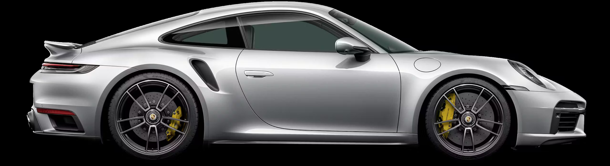

PORSCHE 911: The Classic Machine
The Porsche 911 stands as a timeless icon in the world of automobiles—an enduring symbol of precision engineering, elegance, and raw performance. First introduced in 1964, the 911 has carved a legacy that few cars can rival. With its instantly recognizable silhouette, rear-engine layout, and roaring flat-six engine, it’s more than just a sports car; It’s a machine that speaks to the soul of a true enthusiast. Unlike fleeting trends, the 911 has never compromised its identity. Over decades, it has evolved in design, technology, and performance—adapting to modern needs while preserving the heart of what made it legendary. From racetracks to scenic highways, the Porsche 911 offers a driving experience that feels both thrilling and precise, like a symphony of mechanics and emotion. Beyond speed and style, the 911 carries a story—a story of heritage, innovation, and the relentless pursuit of perfection. It is not just a machine built for the road, but a statement of class, craftsmanship, and passion. Whether you’re a collector, a racer, or a dreamer staring at it from afar, the Porsche 911 commands respect. It truly is, and forever will be, the classic machine.
From its humble beginnings in the early 1960s to the cutting-edge marvels of today, the Porsche 911 has seen a remarkable evolution. What started as the Type 901 soon became the 911 due to a trademark dispute, but the name change did nothing to dim its destiny. With each generation—whether it was the air-cooled charm of the classic models or the refined aggression of the modern turbocharged beasts—the 911 has adapted gracefully, preserving its soul while embracing innovation. Technological milestones like the introduction of all-wheel drive, advanced aerodynamics, adaptive suspension, and digital driving aids have kept the 911 relevant in a fiercely competitive market. Yet, it has never lost its signature feel—that connection between driver and machine that few cars offer today. In the modern luxury sports car market, the 911 remains unmatched in versatility. It’s as comfortable on the racetrack as it is on a daily commute. Competing against the likes of Ferrari, Aston Martin, and McLaren, Porsche’s pricing strategy and build quality make the 911 a value-packed powerhouse. Whether it's the Carrera, Turbo, or GT3 RS, every model continues to uphold the legacy—earning loyal fans and new admirers with each turn of the wheel.